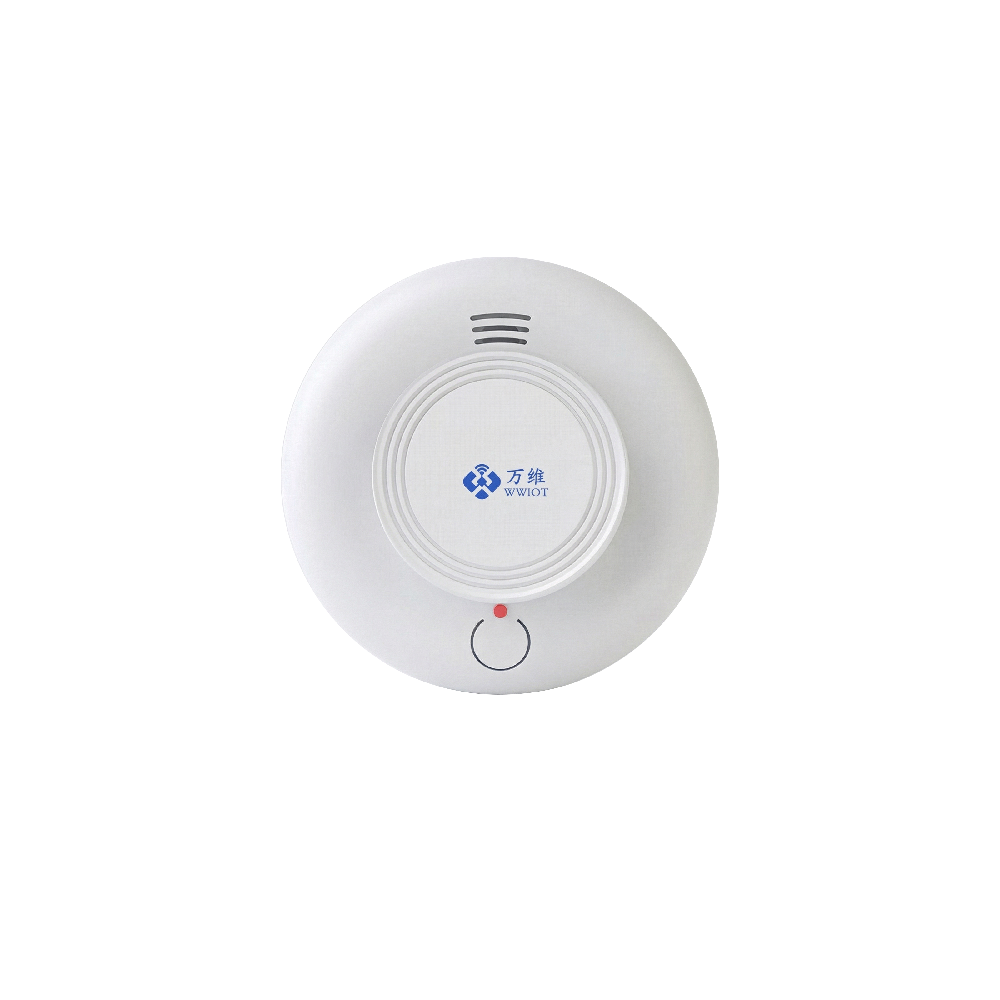

光电式烟雾检测，LoRa/4G 无线报警。适用于各类场所的火灾早期预警和远程监控。
WW-22 系列是一款基于光电式烟雾检测原理的无线烟感报警器。当检测到烟雾浓度超过阈值时，设备立即触发本地声光报警，同时通过 Lora/Lorawan/4G 将报警信号上传至云平台。广泛应用于九小场所、老旧小区改造、仓储物流、学校医院等场景的火灾早期预警。
| 分类 | 订货型号 | 备注 |
|---|---|---|
| 光电式烟感 | WW-22L | Lora，频段 433~510 MHz |
| 光电式烟感 | WW-22HW | 高频 LoRaWAN，863~928 MHz |
| 光电式烟感 | WW-22LW | 低频 LoRaWAN，433~510 MHz |
| 光电式烟感 | WW-22C | 4G 全网通 |
已通过第三方质检认证，质检报告编号：CISZR250922402（WW-12C 型号）。

📦 产品尺寸：Φ104mm × 50mm
（实物图请参考产品彩页或联系销售人员获取）
WW-12 温湿度检测系列产品借助无线远距离传输的特性，广泛应用到从工业到民生、从城市到乡村的各类场景中，尤其在商业办公、冷链物流、智能制造、医疗监管、智慧农业等领域，已成为实现数字化、智能化管理的基础设施。
主要应用场景：
🔥 九小场所防火📦 仓库防火🏫 学校宿舍🏥 医院病房🏠 老旧小区改造
对于老旧场所的升级改造，选择无线技术的设备能最大限度绕过结构限制、降低施工成本、缩短改造周期。
低功耗、传输距离远、信号抗干扰能力强，适用于工业、农业、商业办公、医疗、仓储物流等场景。
借助密集的 4G 移动网络，适用于 4G 信号良好的场景，免去网关部署。
| 参数 | 参数值 |
|---|---|
| 检测类型 | 光电式烟雾检测 |
| 通讯方式 | Lora 扩频 / LoRaWAN / 4G |
| 通讯协议 | 私有 Lora / LoRaWAN / TCP/UDP/MQTT |
| 供电 | ER34615×2 电池 |
| 电池寿命 | 3~5 年（@25℃） |
| 待机电流 | <20 μA |
| 报警声压 | ≥85dB（3米处） |
| 报警方式 | 声光报警 + 远程告警 |
| 发射功率 | 最大 22dBm |
| 接收灵敏度 | -137 dBm |
| 天线类型 | 内置天线 |
| 产品尺寸 | Φ104×50mm |
| 安装方式 | 吸顶安装 |
| 防护级别 | IP30 |
| 颜色 | 白色 |
| 外壳材质 | ABS 阻燃材料 |
| 外部接口 | Type-C 配置口 |
按键位于设备左侧。设备上电时自动开机。
| 区域 | 位置 | 说明 |
|---|---|---|
| 编号区域 | 段码屏左下方 | 运行时显示设备编号，配置时显示参数内容 |
| 时间区域 | 段码屏右下方 | 显示当前时间（时/分），掉电则时间重置 |
| 信号强度 | 屏幕左侧 | 4G 信号强度指示 |
| 电量指示 | 屏幕上方 | 电池电压等级指示，共 4 格 |
| 温度单位 | 屏幕右侧 | 摄氏度（℃）图标 |
设备同时支持蓝牙配置方式，开机状态下短按按键开启蓝牙。
| 参数 | 说明 | 默认值 |
|---|---|---|
| 上报周期 | 定时采集并上报传感器数据的间隔，单位秒 | 600 秒（10 分钟） |
| 检测周期 | 设备主动唤醒读取传感器的间隔。若变化量超过阈值则立即上报，否则不上报。单位秒，最小 1 秒，最大 65535 秒 | 60 秒 |
| 变化量 | 当检测数据与上次发送数据差值超过此阈值时立即上报（不等待上报周期），兼顾响应速度和功耗平衡 | 温度 0.1℃ / 湿度 1% |
终端上报开关量状态，采用 TLV 格式，兼容 LoRaWAN 标准数据帧。具体报文格式与温湿度传感器系列一致，请参考 WW-12 说明书第 9 节获取详细数据报文格式说明。
| 扩频因子 SF | 接收灵敏度 dBm（BW=125kHz, 470MHz） |
|---|---|
| SF=7 | -126 |
| SF=8 | -129 |
| SF=9 | -131 |
| SF=10 | -134 |
| SF=11 | -136 |
| SF=12 | -139 |
Lora 版本最大发射功率：+22 dBm
| 修订日期 | 版本 | 发布说明 |
|---|---|---|
| 2025.08 | V1.0 | 初稿发布 |
—— 文档结束 ——